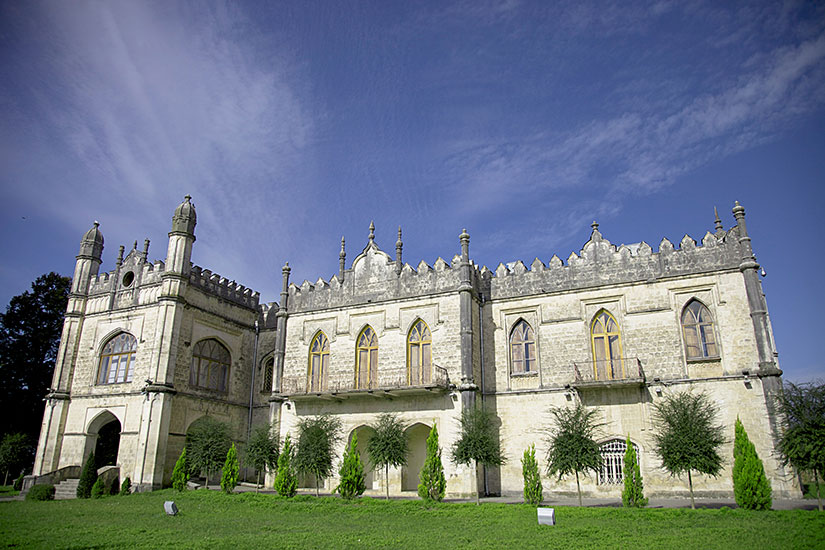
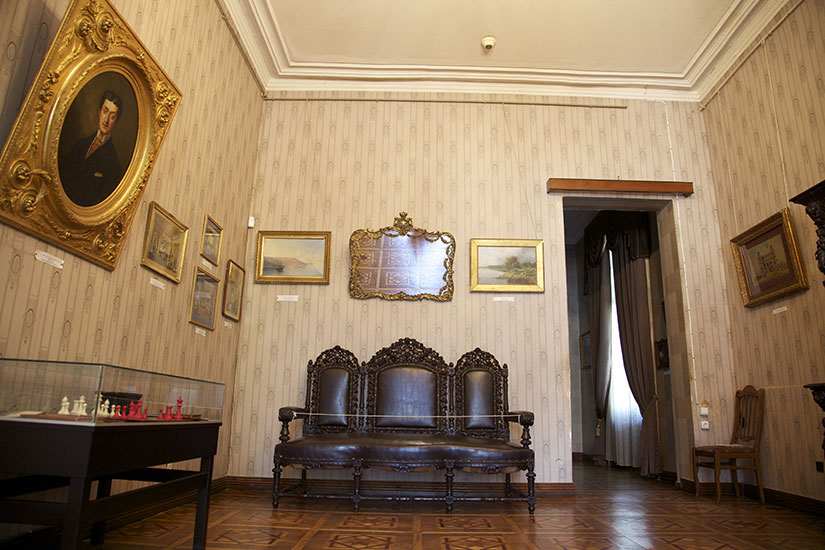
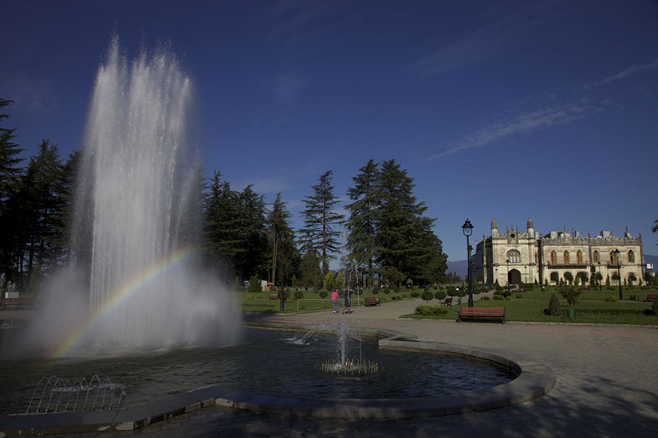

Die Hauptstadt der Region Mengrelien-Oberswanetien ist die georgische Stadt, die der de facto-Grenze mit der abtrünnigen Teilrepublik Abchasien am nächsten liegt. Über die Inguri-Brücke am Rande Sugdidis wird der eingeschränkte Grenzverkehr abgewickelt. Im Schloss Dadiani, dem früheren Sitz der Prinzessin von Mengrelien, sind heute die Todesmaske Napoleons und ein Grabtuch der Gottesmutter Maria zu sehen. Junge Menschen aus der Region nehmen oft an Workshops und friedensstiftenden Programmen teil, die von internationalen NGOs organisiert werden. Dank der sozialen Medien ist ein neues Kommunikationsnetzwerk enstanden, mit dessen Hilfe aktiv über die Zukunft der vom Konflikt geprägten Region diskutiert wird.